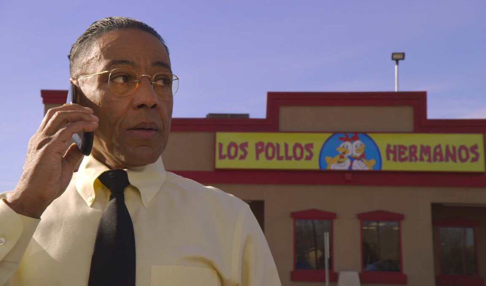
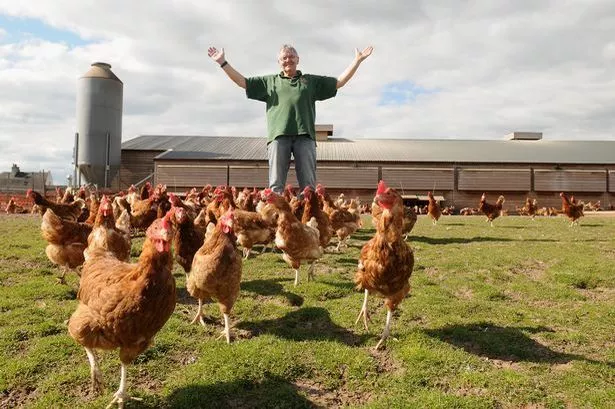
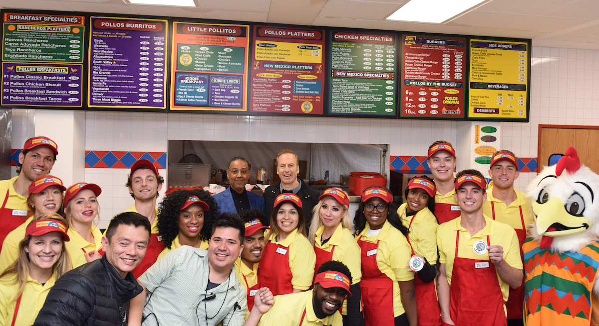

Los Pollos Hermanos is een charmant familiebedrijf dat zijn oorsprong vindt in het hart van een klein
dorpje genaamd Saltillo. Dit eetparadijs werd opgericht door niemand minder dan Gus Fring, samen met
zijn toegewijde broer, Max Arciniega. Samen noemen ze zichzelf de "Chicken Brothers," een naam die
synoniem is geworden met heerlijke culinaire ervaringen en een warme, familiaire sfeer.

Wat ons onderscheidt van de rest is onze geheime kruidenmix met wortels diep in de Mexicaanse
culinaire
traditie. Deze unieke mix van smaken en aroma's zorgt voor een onvergetelijke eetervaring. Onze
toegewijde koks hebben deze traditionele kruiden en specerijen tot in de perfectie verfijnd, en het
resultaat is een ongeëvenaarde smaak die mensen van over de hele wereld naar Los Pollos Hermanos
trekt.

Vanaf het moment dat we onze deuren openden in de Verenigde Staten, hebben we gezinnen zoals de jouwe
en
de mijne mogen bedienen. Bij Los Pollos Hermanos geloven we dat lekker eten niet alleen voorbehouden
moet zijn aan gastronomische ervaringen, maar beschikbaar moet zijn voor iedereen. Daarom zetten we
ons
in om onze heerlijke gerechten tegen betaalbare prijzen aan te bieden, zodat iedereen kan genieten
van
de verrukkelijke smaken die ons restaurant te bieden heeft.

Terwijl we onze wortels in Saltillo blijven eren, kijken we met opwinding naar de toekomst. Onze
droom is
om verder te groeien, meer mensen te verwelkomen in onze Los Pollos Hermanos familie en hen te laten
kennismaken met de onweerstaanbare smaken die ons restaurant tot een begrip hebben gemaakt. Dus, of
je
nu een lokale bewoner bent of een reiziger op zoek naar een smaakvolle ervaring, we nodigen je van
harte
uit om deel uit te maken van onze reis en te genieten van de heerlijke gerechten die de "Chicken
Brothers" te bieden hebben. Welkom bij Los Pollos Hermanos, waar elke hap een smaakvol avontuur is!